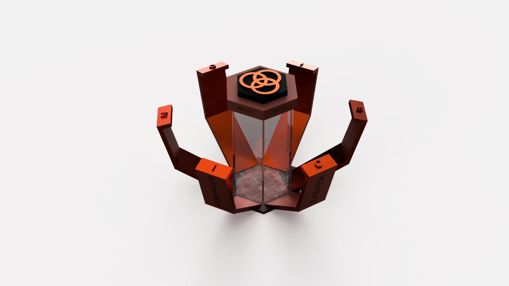

The Challenge
Design a new potion bottle inspired by the world of Lab Rats using Fusion 360, a 3D modeling tool. The form had to feel like it belonged in that universe — merging scientific apparatus with fantastical prop design.
My Role
Solo designer. Concept ideation, 3D modeling, and form development.
